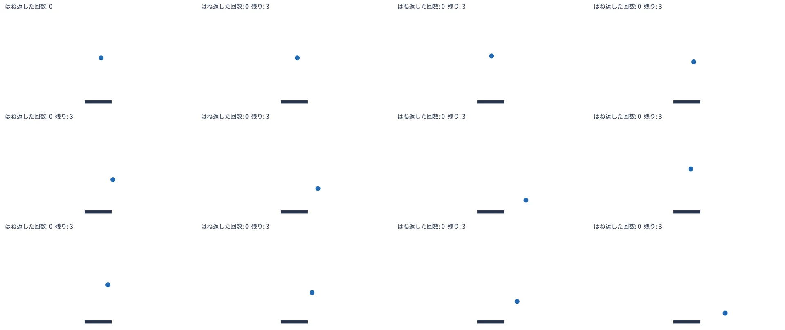
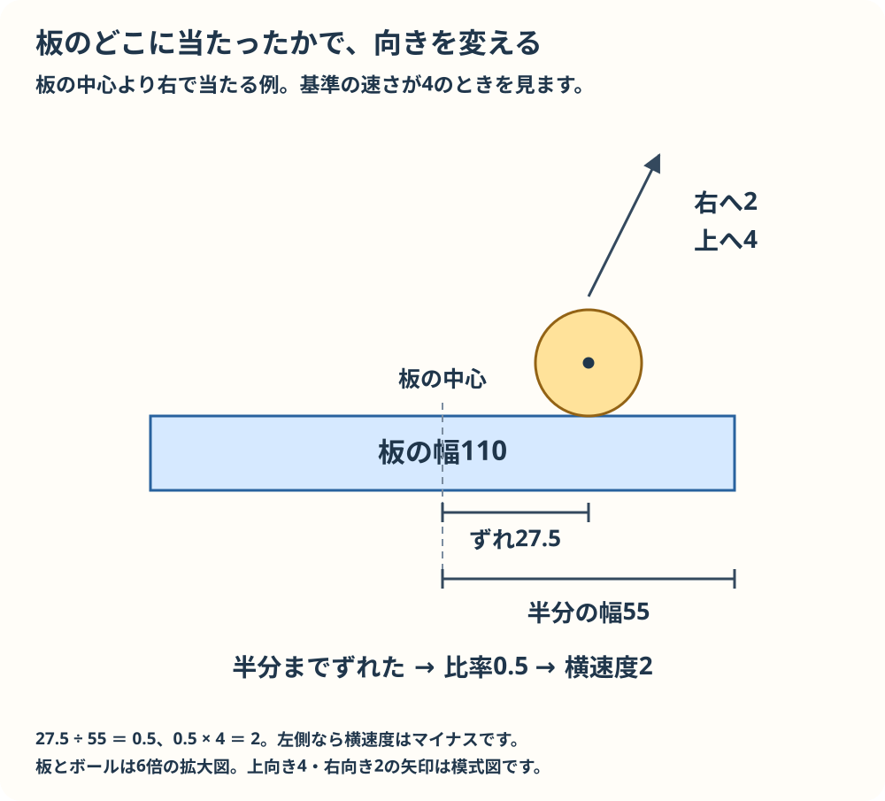

ボールをはね返すゲームの発展
基本の完成版から3つの機能を順番に追加します。
始める前に
基本編の完成版から始めます。ZIPを展開してできたフォルダーでindex.htmlを開きます。ZIPには基本編の3ファイルが入っています。
WindowsでZIPを展開する（動画）
自分で作った基本版でも同じ内容なら使えます。
各段階の変更を上から順に作業用の script.js に加えます。変更前と同じ範囲を探して、変更後のコードに置き換えてください。保存したら index.html を開くか、再読み込みします。
ステップ 1：残り回数を作る
このステップの見本を図で見る

このステップの見本
score = 0; over = false; left = false; right = false;
変わったコードの一例（script.js）score = 0; over = false; lives = 3; left = false; right = false;
見本で確かめること
落とすと残りが2になり、ボールが中央へ戻ります。
目標
落としても残り回数があれば、中央から続けます。
確認欄までは準備中です。作業を順に進め、確認欄で保存して動作を確かめます。
書く場所と置き換えるコード
残り回数を用意する
作業用フォルダーの script.js で、次の範囲を探して置き換えます。
置き換える範囲
let left = false, right = false, score, over;
置き換えるコード
let left = false, right = false, score, over, lives;
lives は残り回数です。
残り回数を初期化する
作業用フォルダーの script.js で、次の範囲を探して置き換えます。
置き換える範囲
score = 0; over = false; left = false; right = false;
置き換えるコード
score = 0; over = false; lives = 3; left = false; right = false;
start() で3にするので、R キーでやり直したときも3に戻ります。
落としたときに残りを減らす
作業用フォルダーの script.js で、次の範囲を探して置き換えます。
置き換える範囲
if (y - radius > canvas.height) over = true;
置き換えるコード
if (y - radius > canvas.height) {
lives--;
if (lives === 0) {
over = true;
} else {
x = 400; y = 225; dx = 4; dy = 4;
}
}
y - radius はボールの上端です。画面の高さを越えると lives-- で1減らします。0なら終了し、まだ残っていればボールの位置と速度を戻します。得点と板の位置はそのままです。
残り回数を表示する
作業用フォルダーの script.js で、次の範囲を探して置き換えます。
置き換える範囲
ctx.fillText("はね返した回数: " + score, 20, 35);
置き換えるコード
ctx.fillText("はね返した回数: " + score + " 残り: " + lives, 20, 35);
+ で文字、score、lives をつなぎ、座標 (20, 35) に描きます。
保存後の確かめ方
保存してゲーム画面を更新する（動画）
index.html を再読み込みします。落とすと残りが2になり、ボールが中央へ戻ります。3回落とすと終了し、Rで再開します。 この段階の見本を開く
小さな練習
最初の残り回数3を4に変えて確かめます。 練習後はコードを元に戻してください。
ステップ 2：当てる場所で向きを変える
このステップの見本を図で見る
このステップの見本
y = paddleY - radius; dy = -dy; score++;
変わったコードの一例（script.js）const offset = (x - (paddleX + paddleWidth / 2)) / (paddleWidth / 2);
見本で確かめること
板の中央ではほぼ真上、左右ではそれぞれの側へはね返ります。
目標
板のどこに当てたかで横に進む向きを変えます。
確認欄までは準備中です。作業を順に進め、確認欄で保存して動作を確かめます。
書く場所と置き換えるコード
当たる場所で向きを変える
作業用フォルダーの script.js で、次の範囲を探して置き換えます。
置き換える範囲
y = paddleY - radius; dy = -dy; score++;
置き換えるコード
const offset = (x - (paddleX + paddleWidth / 2)) / (paddleWidth / 2);
dx = Math.max(-1, Math.min(1, offset)) * 4;
y = paddleY - radius; dy = -Math.abs(dy); score++;
paddleX + paddleWidth / 2 は板の中心です。ボールの中心との差を半幅で割ると、中央は0、左側は負、右側は正です。Math.min() と Math.max() で−1から1に収めて4を掛けます。右へ半幅の半分ずれた0.5なら dx は2です。Math.abs(dy) の前にマイナスを付け、縦速度を上向きにします。

板の中心から右へ27.5ずれたところに当たるとします。半分の幅55のちょうど半分なので、ずれの比率は0.5です。基準の速さが4なら、横速度は0.5×4で2になります。左側に当たれば、横速度はマイナスになります。
板とボールは6倍の拡大図です。反射矢印は右へ2・上へ4の比率を示す模式図で、合成した速さが4という意味ではありません。
保存後の確かめ方
板の中央ではほぼ真上、左右ではそれぞれの側へはね返ります。 この段階の見本を開く
小さな練習
横速度に掛ける4を3に変え、反射の広がりを比べます。 練習後はコードを元に戻してください。
ステップ 3：回数で速くなる
このステップの見本を図で見る
このステップの見本
dx = Math.max(-1, Math.min(1, offset)) * 4;
変わったコードの一例（script.js）const speed = Math.min(8, 4 + Math.floor((score + 1) / 3));
見本で確かめること
3回はね返すと、それまでより速く動きます。
目標
はね返した回数に応じてボールの速さを上げます。
確認欄までは準備中です。作業を順に進め、確認欄で保存して動作を確かめます。
書く場所と置き換えるコード
反射した回数で速さを決める
作業用フォルダーの script.js で、次の範囲を探して置き換えます。
置き換える範囲
dx = Math.max(-1, Math.min(1, offset)) * 4;
y = paddleY - radius; dy = -Math.abs(dy); score++;
置き換えるコード
const speed = Math.min(8, 4 + Math.floor((score + 1) / 3));
dx = Math.max(-1, Math.min(1, offset)) * speed;
y = paddleY - radius; dy = -speed; score++;
score + 1 は今回の反射を含む回数です。3で割り Math.floor() で切り捨てるので、1回目と2回目は速さ4、3回目からは5です。Math.min(8, ...) で上限を8にします。
落とした後も今の速さで再開する
作業用フォルダーの script.js で、次の範囲を探して置き換えます。
置き換える範囲
x = 400; y = 225; dx = 4; dy = 4;
置き換えるコード
const speed = Math.min(8, 4 + Math.floor(score / 3));
x = 400; y = 225; dx = speed; dy = speed;
ここでは新たな反射がないため score をそのまま使います。ボールを中央に戻し、現在の回数に応じた速さで右下へ動かします。R キーで初期値に戻ります。
保存後の確かめ方
3回はね返すと、それまでより速く動きます。残り0で終了し、Rで速さも戻ります。 この段階の見本を開く
小さな練習
上限8を6に変え、速さの上限を比べます。 練習後はコードを元に戻してください。